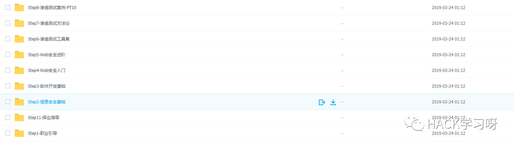

Web安全学习路线 | 附干货

学习基础 时间：1周 ~ 2周：
① 我们用这段时间了解基本的概念：（SQL注入、XSS、上传、CSRF、一句话木马、常见的后台等：可以通过Google搜索获取资料）为之后的WEB渗透测试打下基础。
② 查看一些论坛的一些Web渗透资料，学一学案例的思路，每一个站点都不一样，所以思路是主要的。
③ 学会提问的艺术，如果遇到不懂得要善于提问。
配置渗透环境 时间：3周 ~ 4周：
① 了解渗透测试常用的工具，例如（AWVS、SQLMAP、NMAP、APPSCAN、BURP、中国菜刀等）。
② 下载这些工具无后门版本并且安装到计算机上，并做一个工具包，推荐Rolan。
③ 了解这些工具的使用场景，懂得基本的使用，推荐在Secwiki或者Google上查找资料。
渗透实战操作 时间：约6周：
① 在网上搜索渗透实战案例，深入了解SQL注入、文件上传、解析漏洞等在实战中的使用。
② 自己搭建漏洞环境测试，推荐DWVA，SQLi-labs，Upload-labs，bWAPP。
③ 懂得渗透测试的阶段，每一个阶段需要做那些动作：例如PTES渗透测试执行标准。
④ 深入研究手工SQL注入，寻找绕过waf的方法，制作自己的脚本。
⑤ 研究文件上传的原理，如何进行截断、双重后缀欺骗(IIS、PHP)、解析漏洞利用（IIS、Nignix、Apache）等，参照：上传攻击框架。
⑥ 了解XSS形成原理和种类，在DWVA中进行实践，使用一个含有XSS漏洞的cms，安装安全狗等进行测试。
⑦ 了解一句话木马，并尝试编写过狗一句话。
⑧ 研究在Windows和Linux下的提升权限，Google关键词：提权
经常逛网络安全有关的网站 时间：∞
① 例如：Freebuf、i春秋、安全客、看雪、91Ri.org、Sec-wiki、安全脉搏、Sec圈子社区、T00ls论坛等。
② 遇到有意义的文章可以转载到自己博客
熟悉Windows & Kali Linux 系统 时间：2周 ~ 4周
①了解Windows系统下的常用命令，如：ipconfig,nslookup,tracert,net,tasklist,taskkill等。
② 熟悉Linux系统的常用命令，如：wget、mv、cd、rm、mkdir等。
③ 熟悉Kali Linux系统下的常用工具，可以看看安全牛课堂上苑房弘老师的Kali课程[推荐1.5倍速播放]，可以参考SecWiki,《Web Penetration Testing with Kali Linux》、《Hacking with Kali》等。
学习服务器的安全配置 时间：4周左右
① 了解03、08、12系统下iis的基本配置，了解Win下的目录权限（例如iis写权限），建立一个简单的站点。
② 了解Linux的运行权限、跨目录、文件夹权限，学会配置Linux Web服务器，并建立一个简单的站点。
③ 使用自动化工具扫描已经建立好的站点，并利用Google学会修补漏洞。
④ 学会打补丁、iptables限制端口、添加规则等。
⑤ 下载一款waf软件，熟悉它的使用。
学习一些编程知识 时间：约8周
① 在w3cschool上学习html、php、数据库的基础，建议每一种学到第8节就可以了。
② 学习Python（也可以是其他语言，但是强烈建议使用python）。要求学习：爬虫（基础）、多线程、文件操作、正则表达式（基础）还有一些常用的第三方库，可能需要安装pip。
③ 利用python写一个简单的poc或者exp。
④ 开发一些渗透时会用到的程序，例如：端口扫描等。
⑤ 选择一个php框架进行学习，不要太深入。
学习代码审计 时间：4周 ~ 6周
① 了解代码审计的静态和动态方法，懂得分析程序。
② 在乌云镜像里找到开源的漏洞程序，跟着学习分析方法，尝试自己分析3~5次代码。
③ 了解web漏洞形成的原因，熟悉常见漏洞函数。
安全体系开发 时间：∞
① 开发一些安全工具，并将其开源，可以托管到码云或者github上，展示个人实力。
② 建立自己的一套安全体系，拥有独立的思路方法。
PTES执行标准
http://www.doc88.com/p-7784047461299.html

豌豆学院_Web安全工程师课件及环境

公众号后台回复：0327
即可获得下载地址